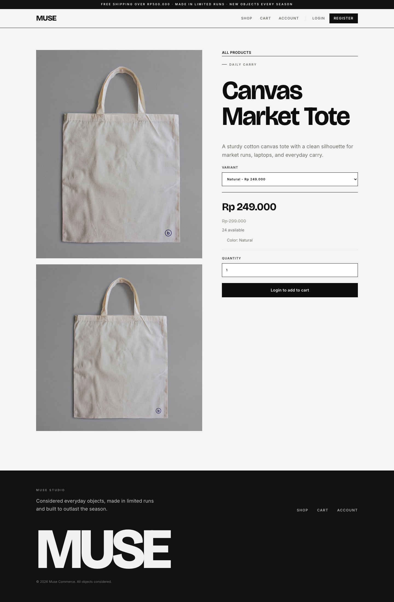
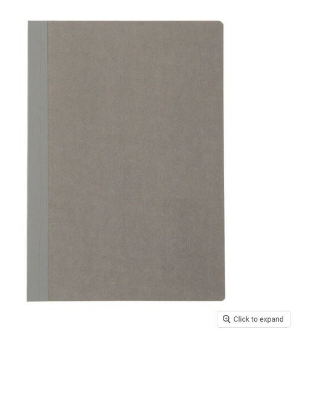
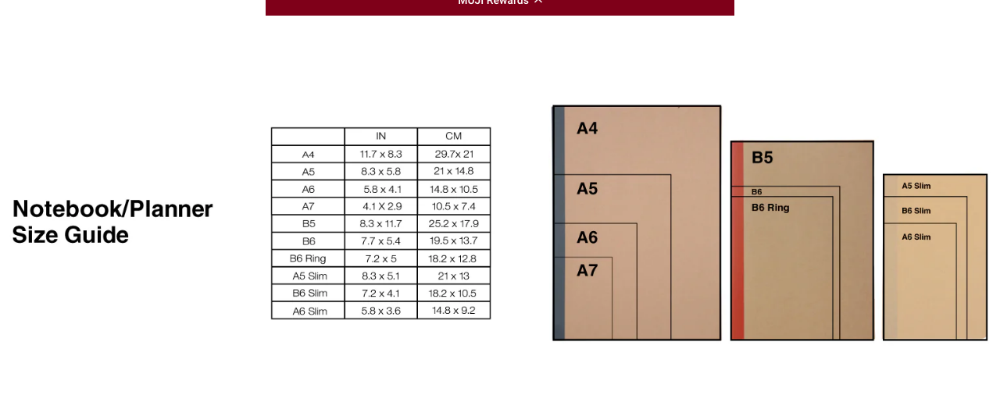
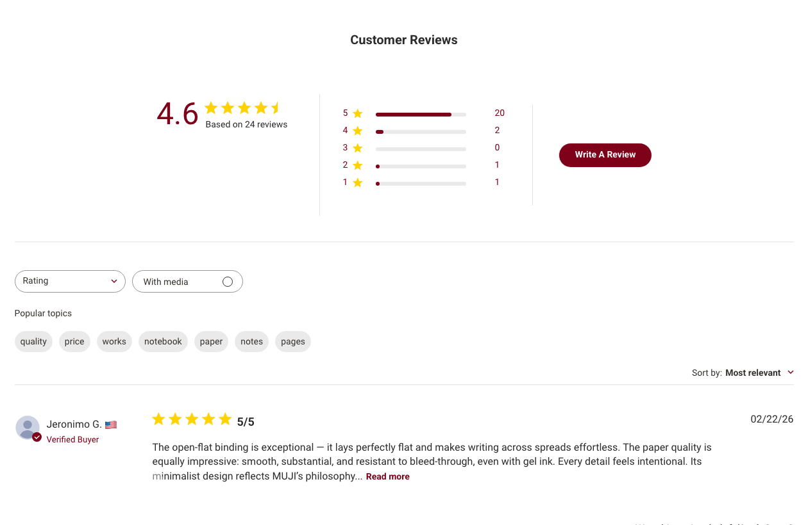
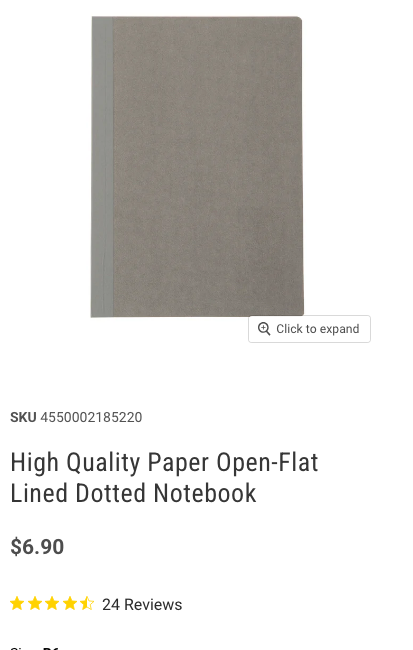
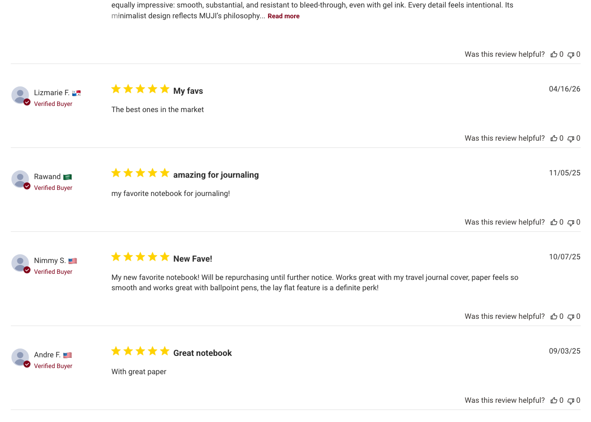

Product Detail Requirement
Turn product detail into a purchase-focused layout: image gallery on the left, compact purchase panel on the right, variant buttons, quantity stepper, add-to-cart CTA, details accordions, and optional review/content sections below.
The current route already handles variant selection and add-to-cart. Preserve behavior, but extract UI into components so the route stays focused on product data, session state, and mutation handling.
Current Page And MUJI Reference

Differences To Resolve
| Area | Current MUSE | Reference behavior | Required MUSE change |
|---|---|---|---|
| Gallery | Featured image and optional thumbnail row. | Square centered image, zoom affordance, thumbnails, stable media area. | Build ProductGallery with square stage and thumbnail rail. |
| Purchase panel | Back link, category, large title, lede, select variant, quantity input. | SKU, title, price, reviews, variant buttons, quantity stepper, CTA in one compact panel. | Build PurchasePanel and move description below controls. |
| Variants | Native select with stock text. | Button groups for visible option choices. | Build VariantOptionGroup; keep select fallback for many variants if needed. |
| Quantity | Number input. | Minus/input/plus stepper next to primary CTA. | Build shared QuantityStepper for PDP and cart. |
| Details | Description only, no structured details. | Accordions for product details, material/care, shipping/returns. | Build DetailAccordion and map available product/settings data. |
| Reviews | Not present. | Summary, filters, review list, pagination. | Mark as later unless review data is added. Reserve section style now. |
Component Requirements With Crops

ProductGallery
Stable square gallery with featured image, thumbnails, and optional zoom affordance.
- Already have
featuredImageUrl,galleryImageUrls.- Get rid
- Loose route-local media markup.
- Need
- Selected thumbnail state, fixed aspect ratio, zoom/expand button later.

PurchasePanel
SKU, title, price, review link, variants, quantity, add to cart, wishlist, notices, accordions.
- Already have
- Product title, description, variant price, stock, add-to-cart mutation.
- Get rid
- Large lede above purchase controls and select-only variant UI.
- Need
- SKU display, compact price area, structured controls, wishlist placeholder.
VariantOptionGroup + QuantityStepper
Visible option buttons and a stepper shared by PDP and cart rows.
- Already have
selectedVariantId,quantity, variant option values.- Get rid
- Plain number field as primary quantity interface.
- Need
- Disabled states, out-of-stock state, min/max clamp, keyboard support.
DetailAccordion
Thin-border accordions for product details, material/care, shipping, returns, and notices.
- Already have
- Description and store settings can cover a first pass.
- Get rid
- Unstructured detail copy in the purchase lead.
- Need
- Material, care, origin, measurements fields later.

ProductInfoSection
Optional long-form content like size guide, measurements, material chart, or care guide.
- Already have
- No dedicated structured content yet.
- Get rid
- None in first pass.
- Need
- Product metafields or admin-managed content blocks.

ReviewSummary + ReviewList
Reserve section style for rating summary, filters, popular topics, review cards, and pagination.
- Already have
- No review data or review routes.
- Get rid
- Nothing now.
- Need
- Review schema, moderation, customer eligibility, empty state.

MobilePurchaseStack
Mobile-first order: product image, title, price, variants, quantity, CTA, then details.
- Already have
- Responsive CSS but no mobile-specific purchase ordering.
- Get rid
- Large desktop spacing carried into mobile.
- Need
- Fixed button widths, no text overflow, sticky CTA optional later.

ReviewCard
Review item layout with author, rating, title, text, date, helpful actions.
- Already have
- No review components.
- Get rid
- None.
- Need
- Review source and moderation before building fully.

ProductBreadcrumb
Small breadcrumb path from home/catalog/category to current product.
- Already have
- Back link to all products.
- Get rid
- Prominent text link as the only navigation context.
- Need
- Home, collection, category, product crumb labels.
Current Components Inventory
| Current piece | Status | Action |
|---|---|---|
ProductDetail |
Keep | Keep data loading, selected variant, add-to-cart handler, auth state. Compose extracted components. |
product-media, thumbnail-row |
Extract/restyle | Move into ProductGallery. |
product-purchase, purchase-form |
Extract/restyle | Move into PurchasePanel, VariantOptionGroup, and QuantityStepper. |
variant-summary |
Restyle | Make price/stock/option information compact and near controls. |
form-message |
Keep/restyle | Use quiet inline notice below CTA. |
useToast |
Keep | Continue toast notifications for add-to-cart success/error. |
Data And Build Notes
Data We Have
Product name, category, description, featured image, gallery images, variants, prices, stock, option values.
Data We Need
SKU display confirmation, material/care/origin fields, measurements, reviews, wishlist, product notices.
Simple First Pass
Use variant SKU/option data where available, description in details, and static shipping/returns text from settings.